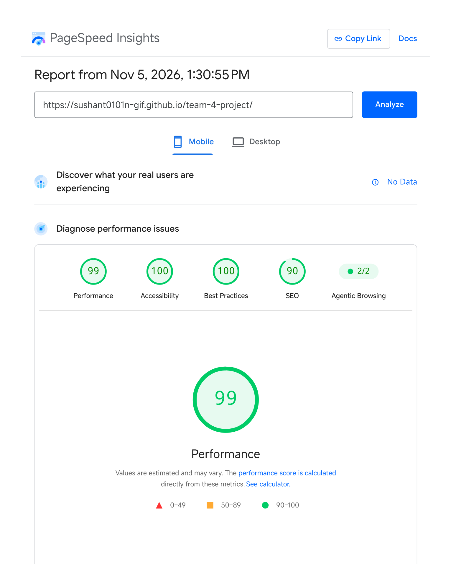
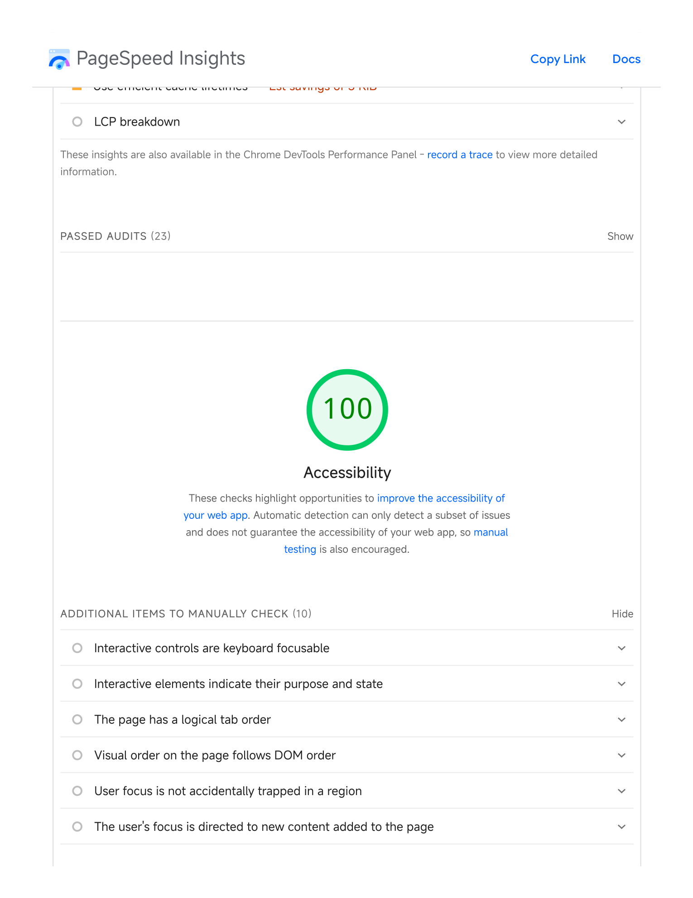

WEB PROGRAMMING · WEEK 9.1
Accessibility Audit Report
Based on the latest PageSpeed Insights PDF supplied on November 5, 2026. Target: Group 4 Student Budget Tracker.
Latest scores
100Accessibility
99Performance
100Best Practices
90SEO
Lighthouse 13.6.0 · Mobile emulation · Nov 5, 2026, 1:30 PM KST
Original PageSpeed evidence
Screenshots taken from the November 5, 2026 PageSpeed Insights report.


Accessibility improvements
- Added a keyboard skip link to jump directly to the main content.
- Used semantic landmarks and meaningful page structure.
- Improved accessible names and labels for interactive controls.
- Used descriptive alt text for meaningful images and empty alt text for decorative images.
Verification
The latest supplied PDF reports Accessibility 100/100. Re-run Lighthouse on the live page to verify the current deployed version.
Open Group 4 Student Budget TrackerReflection
Keyboard access, semantic HTML, labels, and alternative text make a website easier to navigate for people using different devices and assistive technologies.